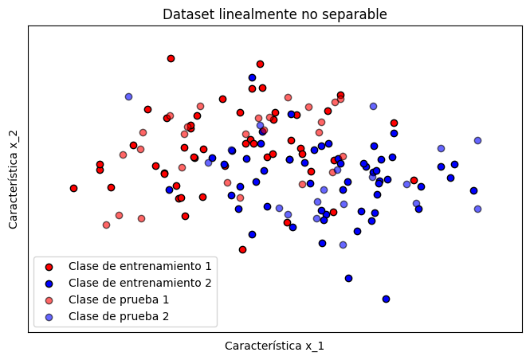
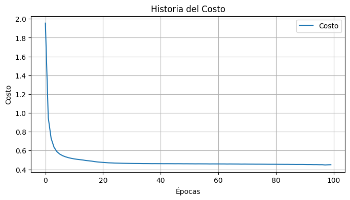
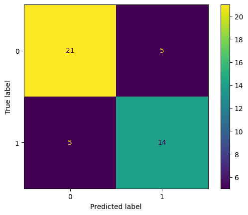
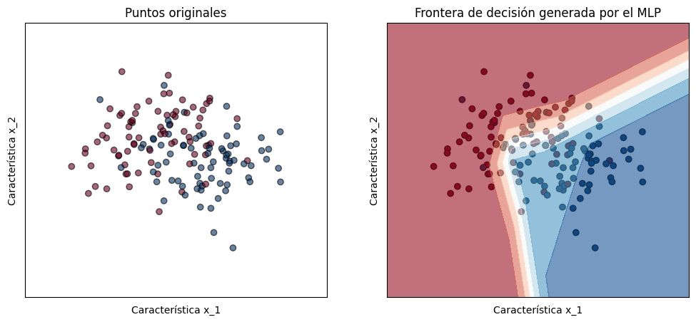

#@title Importar librerías
#importar librerías necesarias
import random
import numpy as np
import pandas as pd
from tqdm.notebook import tqdm
from matplotlib import pyplot as plt
from sklearn.datasets import make_moons
from sklearn.metrics import ConfusionMatrixDisplay
from sklearn.model_selection import train_test_split
from sklearn.metrics import classification_report, confusion_matrixImplementando un Perceptrón Multi-capa (MLP) desde CERO usando python

#@title Funciones complementarias
def plot_dataset(X_train, y_train, X_test, y_test):
# Tamaño de paso en la grilla de valores
# (para la visualización del espacio de características)
h = 0.02
# Definir los límites del gráfico en el eje x e y basados
# en los datos de entrenamiento
x_min, x_max = X[:, 0].min() - 0.5, X[:, 0].max() + 0.5
y_min, y_max = X[:, 1].min() - 0.5, X[:, 1].max() + 0.5
# Crear una malla de puntos para cubrir el espacio de características
xx, yy = np.meshgrid(np.arange(x_min, x_max, h), np.arange(y_min, y_max, h))
# Creación del lienzo para visualizar los datos
fig, ax = plt.subplots(1,1, figsize=(8, 5))
# Agregar titulo a la grafica
ax.set_title("Dataset linealmente no separable")
# Agregar nombres a cada eje de caracteristica
ax.set_xlabel("Característica x_1")
ax.set_ylabel("Característica x_2")
# Puntos de entrenamiento
ax.scatter(X_train[y_train == 0, 0], X_train[y_train == 0, 1],
c="#FF0000", edgecolors="k", label='Clase de entrenamiento 1')
ax.scatter(X_train[y_train == 1, 0], X_train[y_train == 1, 1],
c="#0000FF", edgecolors="k", label='Clase de entrenamiento 2')
# Puntos de prueba
ax.scatter(X_test[y_test == 0, 0], X_test[y_test == 0, 1],
c="#FF0000", edgecolors="k", alpha=0.6, label='Clase de prueba 1')
ax.scatter(X_test[y_test == 1, 0], X_test[y_test == 1, 1],
c="#0000FF", edgecolors="k", alpha=0.6, label='Clase de prueba 2')
# Establecer los límites del gráfico para asegurar que todos los puntos sean visibles
ax.set_xlim(xx.min(), xx.max())
ax.set_ylim(yy.min(), yy.max())
# Eliminar las marcas en los ejes x e y para un gráfico más limpio
ax.set_xticks(())
ax.set_yticks(())
# Añadir una leyenda para identificar las clases de los
# puntos de entrenamiento y prueba
ax.legend()
# mostrar el grafico
plt.show()
def plot_decision_boundary(mlp, X, y, h=0.02):
# Crear una malla de puntos para el espacio de características
x_min, x_max = X[:, 0].min() - 1, X[:, 0].max() + 1
y_min, y_max = X[:, 1].min() - 1, X[:, 1].max() + 1
xx, yy = np.meshgrid(np.arange(x_min, x_max, h),
np.arange(y_min, y_max, h))
# por cada punto de la grilla, hacer una predicción del MLP
Z = np.array([mlp.prediccion([np.array([xx.ravel()[i], yy.ravel()[i]])])
for i in range(len(xx.ravel()))])
# redimensionar para que tenga el mismo shape de la grilla
Z = Z.reshape(xx.shape)
# crear una figura de dos subplots
fig, ax = plt.subplots(1, 2, figsize=(12, 5))
# Graficar los puntos originales
ax[0].set_title('Puntos originales')
ax[0].scatter(X[:, 0], X[:, 1], c=y, cmap=plt.cm.RdBu,
edgecolors='k', alpha=0.6)
# Graficar los puntos de entrenamiento
ax[1].set_title('Frontera de decisión generada por el MLP')
ax[1].scatter(X[:, 0], X[:, 1], c=y, edgecolors='k', cmap=plt.cm.RdBu)
# Graficar la frontera de decisión con un contorno
ax[1].contourf(xx, yy, Z, alpha=0.6, cmap=plt.cm.RdBu)
# mejorar la visualización
for i in range(2):
ax[i].set_xlim(xx.min(), xx.max())
ax[i].set_ylim(yy.min(), yy.max())
ax[i].set_xticks(())
ax[i].set_yticks(())
ax[i].set_xlabel("Característica x_1")
ax[i].set_ylabel("Característica x_2")
plt.show()
def plot_cost_history(costo_historia):
# Grafica el cambio del costo en el entrenamiento
plt.figure(figsize=(8, 4))
plt.plot(costo_historia, label='Costo')
plt.title('Historia del Costo')
plt.xlabel('Épocas')
plt.ylabel('Costo')
plt.legend()
plt.grid(True)
plt.show()Creación dataset sintético
# creación de dataset sintético linealmente no separable
# usando sklearn
X, y = make_moons(n_samples=150, noise=0.5, random_state=0)# dividimos la información para entrenamiento y prueba
X_train, X_test, y_train, y_test = train_test_split(
X, y, test_size=0.3, random_state=42
)# Visualización del conjunto de prueba creado
plot_dataset(X_train, y_train, X_test, y_test)
Creación del MLP
Nuestra implementación de un MLP en python tendrá la siguiente estructura:
class PerceptronMulticapa():
def __init__(self, params=None):
pass
def inicializacion(self):
return None
def forward_pass(self):
return None
def backward_pass(self):
return None
def calcular_perdida_entropia_cruzada(self):
return None
def actualizar_pesos(self):
return None
def prediccion(self):
return None
def entrenar(self):
return None
def evaluar(self):
return Noneparams = {}
params['capa_entrada'] = 2
params['capa_oculta'] = 50
params['capa_salida'] = 1
params['epochs'] = 100
params['lr'] = 0.11. Inicialización
Asignación de atributos e inicialización de pesos y biases
class PerceptronMulticapa():
def __init__(self, params=None):
# Asignación de hiperparámetros
self.capa_entrada = params['capa_entrada']
self.capa_oculta = params['capa_oculta']
self.capa_salida = params['capa_salida']
self.epochs = params['epochs']
self.lr = params['lr']
self.relu = (lambda x: x*(x > 0))
self.derivada_relu = (lambda x: 1 * (x>0))
self.sigmoide = (lambda x: 1/(1 + np.exp(-x)))
self.derivada_sigmoide = (lambda x: x*(1-x))
# inicialización de pesos y bias
self.inicializacion()
def inicializacion(self):
# inicialización de pesos y bias aleatoria
np.random.seed(42) # fijar una semilla para reproducir resultados
# Capa Oculta
self.pesos_capa_oculta = np.random.rand(self.capa_oculta, self.capa_entrada)
self.bias_capa_oculta = np.ones((self.capa_oculta, 1))
# Capa de salida
self.pesos_capa_salida = np.random.rand(self.capa_salida, self.capa_oculta)
self.bias_capa_salida = np.ones((self.capa_salida, 1))# Instanciamos nuestro perceptrón multicapa
mlp = PerceptronMulticapa(params)print('Dimensión pesos capa oculta: {}'.format(mlp.pesos_capa_oculta.shape))
print('Dimensión biases capa oculta: {}'.format(mlp.bias_capa_oculta.shape))
print('Dimensión pesos capa salida: {}'.format(mlp.pesos_capa_salida.shape))
print('Dimensión bias capa salida: {}'.format(mlp.bias_capa_salida.shape))Dimensión pesos capa oculta: (50, 2)
Dimensión biases capa oculta: (50, 1)
Dimensión pesos capa salida: (1, 50)
Dimensión bias capa salida: (1, 1)# ejemplo pesos capa salida
mlp.pesos_capa_salidaarray([[0.03142919, 0.63641041, 0.31435598, 0.50857069, 0.90756647,
0.24929223, 0.41038292, 0.75555114, 0.22879817, 0.07697991,
0.28975145, 0.16122129, 0.92969765, 0.80812038, 0.63340376,
0.87146059, 0.80367208, 0.18657006, 0.892559 , 0.53934224,
0.80744016, 0.8960913 , 0.31800347, 0.11005192, 0.22793516,
0.42710779, 0.81801477, 0.86073058, 0.00695213, 0.5107473 ,
0.417411 , 0.22210781, 0.11986537, 0.33761517, 0.9429097 ,
0.32320293, 0.51879062, 0.70301896, 0.3636296 , 0.97178208,
0.96244729, 0.2517823 , 0.49724851, 0.30087831, 0.28484049,
0.03688695, 0.60956433, 0.50267902, 0.05147875, 0.27864646]])2. Propagación hacia adelante (forward)
Método de propagación hacia adelante
def forward_pass(self, x):
# Realizar la operacion Wx + b de la capa oculta, x = x_0
z = np.matmul(self.pesos_capa_oculta, x) + self.bias_capa_oculta
# Aplicar función de activación
h = self.relu(z) # z = x_1, h = x_2
# Aplicar la operación Wh + b para generar la salida, y = x_3
y = np.matmul(self.pesos_capa_salida, h) + self.bias_capa_salida
# Aplicar función de activación softmax para la clasificación
y_pred = self.sigmoide(y) # y = x_4
return z, h, y_pred# Añadimos nuestro nuevo método
setattr(PerceptronMulticapa, 'forward_pass', forward_pass)# seleccionamos una muestra del dataset
# por ser solo uno se redimensiona para que tenga la estructura de entrada propia
x_i = X_train[0,:].reshape((-1, 1))
z, h, y_pred = mlp.forward_pass(x_i)print('Dimensión biases capa oculta: {}'.format(z.shape))
print('Dimensión de la capa oculta: {}'.format(h.shape))
print('Predicción: {}'.format(y_pred))
print('Capa oculta: {}'.format(h))Dimensión biases capa oculta: (50, 1)
Dimensión de la capa oculta: (50, 1)
Predicción: [[1.]]
Capa oculta: [[0.72633077]
[1.01761811]
[0.99129875]
[0.64226347]
[0.91951467]
[0.58240149]
[1.22554416]
[0.98915428]
[0.88627666]
[1.03760999]
[1.17304912]
[0.95112959]
[0.83016191]
[0.85085938]
[1.20642355]
[1.1577875 ]
[0.60864823]
[1.01505623]
[1.07377182]
[1.06886654]
[0.82949748]
[0.61426555]
[0.80843687]
[0.89119274]
[1.12821114]
[1.03116189]
[0.96713639]
[0.82449353]
[0.94790496]
[0.87459926]
[1.02976633]
[1.1607742 ]
[0.86948377]
[0.70204454]
[0.59561443]
[1.20847428]
[0.64438828]
[0.95081357]
[1.26279179]
[1.08640592]
[1.05700326]
[1.09879949]
[0.97640557]
[0.99963981]
[1.13251031]
[0.73290002]
[1.0450389 ]
[1.0785398 ]
[1.0125701 ]
[0.96240177]]3. Función para calcular el error
Método que permite conocer el error de una predicción con respecto a la etiqueta real.
def calcular_perdida_entropia_cruzada(self, y_real, y_pred):
epsilon = 1e-12
# asegura que los valores de las predicciones esten en un rango
# seguro para evitar logaritmos de 0 y 1
y_pred = np.clip(y_pred, epsilon, 1 - epsilon)
# calculo de la perdida
perdida = -(((1 - y_real) * np.log(1 - y_pred + epsilon)) + (y_real * np.log(y_pred + epsilon)))
return perdida# Añadimos nuestro nuevo método
setattr(PerceptronMulticapa, 'calcular_perdida_entropia_cruzada', calcular_perdida_entropia_cruzada)# Probamos nuestra función de error
y_real = y_train[0]
error = mlp.calcular_perdida_entropia_cruzada(y_real, y_pred)
print(f'Error: {error}')Error: [[6.67165212e-11]]4. Propagación hacía atrás (backward)
Método para propagar los errores hacía atrás.
def backward_pass(self, x, z, y_real, h, y_pred):
# Propagación de error en la capa de salida
# Calculo de error en la capa de salida g_out
#error_salida = (y_pred - y_real) * self.derivada_sigmoide(y_pred)
error_salida = y_pred - y_real
# gradiente de los pesos respecto a la capa de salida
# X_in * g_out = error_salida * h.T
# X_in = h es la entrada a la capa de salida
self.gradiente_pesos_capa_salida = np.matmul(error_salida, h.T)
# gradiente de los bias respecto a la capa de salida
self.gradiente_bias_capa_salida = error_salida
# Propagación de error en la capa oculta
# gradiente respecto a la capa oculta
# (g_out * W) * relu'(X_in)
# X_in en esta capa es la salida de aplicar la primera transformación
error_oculta = np.matmul(self.pesos_capa_salida.T, error_salida) * self.derivada_relu(z)
# gradientes con respecto a la capa oculta, de nuevo g_out * X_in
self.gradiente_pesos_capa_oculta = np.matmul(error_oculta, x.T)
self.gradiente_bias_capa_oculta = error_oculta# Añadimos nuestro nuevo método
setattr(PerceptronMulticapa, 'backward_pass', backward_pass)# calcular propagación de errores
mlp.backward_pass(x_i, z, y_real, h, y_pred)print('Dimensión gradientes capa oculta: {}'.format(mlp.gradiente_pesos_capa_oculta.shape))
print('Gradientes capa oculta: {}'.format(mlp.gradiente_pesos_capa_oculta))Dimensión gradientes capa oculta: (50, 2)
Gradientes capa oculta: [[-8.14789923e-13 9.33629314e-13]
[-1.64987027e-11 1.89050846e-11]
[-8.14956162e-12 9.33819800e-12]
[-1.31845056e-11 1.51075026e-11]
[-2.35283225e-11 2.69599942e-11]
[-6.46280811e-12 7.40542677e-12]
[-1.06390243e-11 1.21907558e-11]
[-1.95873816e-11 2.24442561e-11]
[-5.93150715e-12 6.79663407e-12]
[-1.99567547e-12 2.28675032e-12]
[-7.51169840e-12 8.60730064e-12]
[-4.17960177e-12 4.78920839e-12]
[-2.41020651e-11 2.76174187e-11]
[-2.09502196e-11 2.40058678e-11]
[-1.64207563e-11 1.88157695e-11]
[-2.25922909e-11 2.58874398e-11]
[-2.08348990e-11 2.38737273e-11]
[-4.83675923e-12 5.54221410e-12]
[-2.31392593e-11 2.65141851e-11]
[-1.39822466e-11 1.60215964e-11]
[-2.09325850e-11 2.39856612e-11]
[-2.32308329e-11 2.66191149e-11]
[-8.24412154e-12 9.44654975e-12]
[-2.85305512e-12 3.26918119e-12]
[-5.90913412e-12 6.77099787e-12]
[-1.10726102e-11 1.26875814e-11]
[-2.12067279e-11 2.42997885e-11]
[-2.23141195e-11 2.55686963e-11]
[-1.80231392e-13 2.06518646e-13]
[-1.32409334e-11 1.51721606e-11]
[-1.08212247e-11 1.23995306e-11]
[-5.75806219e-12 6.59789168e-12]
[-3.10746496e-12 3.56069743e-12]
[-8.75254746e-12 1.00291310e-11]
[-2.44445826e-11 2.80098934e-11]
[-8.37891553e-12 9.60100382e-12]
[-1.34494535e-11 1.54110939e-11]
[-1.82255044e-11 2.08837453e-11]
[-9.42696189e-12 1.08019107e-11]
[-2.51930882e-11 2.88675707e-11]
[-2.49510873e-11 2.85902733e-11]
[-6.52736216e-12 7.47939620e-12]
[-1.28909822e-11 1.47711680e-11]
[-7.80015802e-12 8.93783290e-12]
[-7.38438363e-12 8.46141666e-12]
[-9.56280359e-13 1.09575653e-12]
[-1.58027281e-11 1.81076003e-11]
[-1.30317663e-11 1.49324859e-11]
[-1.33456744e-12 1.52921783e-12]
[-7.22380571e-12 8.27741800e-12]]5. Entrenamiento
Método para iterar sobre todo el conjunto de datos y entrenar la red. Antes se deberá generar otro método que haga la respectiva actualización de pesos, una vez ya los gradientes son calculados.
def actualizar_pesos(self):
# actualizar pesos aplicando gradiente descendiente
self.pesos_capa_salida -= self.lr * self.gradiente_pesos_capa_salida
self.bias_capa_salida -= self.lr * self.gradiente_bias_capa_salida
self.pesos_capa_oculta -= self.lr * self.gradiente_pesos_capa_oculta
self.bias_capa_oculta -= self.lr * self.gradiente_bias_capa_oculta
def entrenar(self, X, y):
# almacenar el costo de cada iteración
self.costo_historia = []
# iterar sobre el número de épocas
for iteracion in tqdm(range(self.epochs), desc='Iteraciones'):
# iterar sobre los datos de entrenamiento
error_total = 0 # error para la iteración i
# iterar sobre todo el conjunto de datos
for i, (x_i, y_i) in tqdm(enumerate(zip(X,y)), desc='Datos', leave=False):
# asegurar de que la entrada y la salida solo tenga una columna
x_i = x_i.reshape(-1, 1)
y_i = y_i.reshape(-1, 1)
# aplicar propagación hacia adelante
z, h, y_pred = self.forward_pass(x_i)
# calcular la perdida de entropia cruzada
perdida = self.calcular_perdida_entropia_cruzada(y_i, y_pred)
error_total += perdida
# aplicar propagación hacia atras
self.backward_pass(x_i, z, y_i, h, y_pred)
# actualizar pesos y bias usando gradiente descendiente
self.actualizar_pesos()
# almacenar los costos de cada iteración
self.costo = error_total / len(X)
self.costo_historia.append(self.costo)
#print(f'costo: {self.costo[0][0]} en la iteración: {iteracion}')# Añadimos nuestros nuevos métodos
setattr(PerceptronMulticapa, 'actualizar_pesos', actualizar_pesos)
setattr(PerceptronMulticapa, 'entrenar', entrenar)# realizamos el respectivo entrenamiento
mlp.entrenar(X_train, y_train)print(f'Costo final: {mlp.costo}')Costo final: [[0.44965122]]# Visualizar el cambio del costo durante el entrenamiento
plot_cost_history(np.array(mlp.costo_historia).ravel())
Evaluación
Para evaluar nuestro modelo con la información de test, creamos primero la función de predicción y seguidamente evaluamos el rendimiento en test.
def prediccion(self, X):
predicciones = []
for x_i in X:
x_i = x_i.reshape(-1, 1) # Asegurar que x_i sea una columna
z, _, y_pred = self.forward_pass(x_i)
predicciones.append(y_pred)
return np.array(predicciones).flatten()
def evaluar(self, X, y, umbral):
# generar predicciones
y_pred = self.prediccion(X)
# convertir a 0 y 1 bajo un umbral
y_pred = np.where(y_pred >= umbral, 1, 0)
# generar reporte de clasificación y matriz de confusión
print(classification_report(y, y_pred))
cm = confusion_matrix(y, y_pred)
# visualizacion de la matriz de confusion
ConfusionMatrixDisplay(cm).plot()
plt.show()
return y_pred, cm# Añadimos nuestros nuevos métodos
setattr(PerceptronMulticapa, 'prediccion', prediccion)
setattr(PerceptronMulticapa, 'evaluar', evaluar)# evaluar y visualizar la matriz de confusion usando sklearn
y_pred, cm = mlp.evaluar(X_test, y_test, umbral=0.5) precision recall f1-score support
0 0.81 0.81 0.81 26
1 0.74 0.74 0.74 19
accuracy 0.78 45
macro avg 0.77 0.77 0.77 45
weighted avg 0.78 0.78 0.78 45

7. Interpretabilidad
Gráficamos algunos aspectos de interpretabilidad como la frontera de decisión generada.
plot_decision_boundary(mlp, X, y, h=0.02)
Clase python PerceptronMulticapa Completo
class PerceptronMulticapa():
def __init__(self, params=None):
# Asignación de hiperparámetros
self.capa_entrada = params['capa_entrada']
self.capa_oculta = params['capa_oculta']
self.capa_salida = params['capa_salida']
self.epochs = params['epochs']
self.lr = params['lr']
self.relu = (lambda x: x*(x > 0))
self.derivada_relu = (lambda x: 1 * (x>0))
self.sigmoide = (lambda x: 1/(1 + np.exp(-x)))
self.derivada_sigmoide = (lambda x: x*(1-x))
# inicialización de pesos y bias
self.inicializacion()
def inicializacion(self):
# inicialización de pesos y bias aleatoria
np.random.seed(42) # fijar una semilla para reproducir resultados
# Capa Oculta
self.pesos_capa_oculta = np.random.rand(self.capa_oculta, self.capa_entrada)
self.bias_capa_oculta = np.ones((self.capa_oculta, 1))
# Capa de salida
self.pesos_capa_salida = np.random.rand(self.capa_salida, self.capa_oculta)
self.bias_capa_salida = np.ones((self.capa_salida, 1))
def forward_pass(self, x):
# Realizar la operacion Wx + b de la capa oculta, x = x_0
z = np.matmul(self.pesos_capa_oculta, x) + self.bias_capa_oculta
# Aplicar función de activación
h = self.relu(z) # z = x_1, h = x_2
# Aplicar la operación Wh + b para generar la salida, y = x_3
y = np.matmul(self.pesos_capa_salida, h) + self.bias_capa_salida
# Aplicar función de activación softmax para la clasificación
y_pred = self.sigmoide(y) # y = x_4
return z, h, y_pred
def actualizar_pesos(self):
# actualizar pesos aplicando gradiente descendiente
self.pesos_capa_salida -= self.lr * self.gradiente_pesos_capa_salida
self.bias_capa_salida -= self.lr * self.gradiente_bias_capa_salida
self.pesos_capa_oculta -= self.lr * self.gradiente_pesos_capa_oculta
self.bias_capa_oculta -= self.lr * self.gradiente_bias_capa_oculta
def backward_pass(self, x, z, y_real, h, y_pred):
# Propagación de error en la capa de salida
# Calculo de error en la capa de salida g_out
#error_salida = (y_pred - y_real) * self.derivada_sigmoide(y_pred)
error_salida = y_pred - y_real
# gradiente de los pesos respecto a la capa de salida
# X_in * g_out = error_salida * h.T
# X_in = h es la entrada a la capa de salida
self.gradiente_pesos_capa_salida = np.matmul(error_salida, h.T)
# gradiente de los bias respecto a la capa de salida
self.gradiente_bias_capa_salida = error_salida
# Propagación de error en la capa oculta
# gradiente respecto a la capa oculta
# (g_out * W) * relu'(X_in)
# X_in en esta capa es la salida de aplicar la primera transformación
error_oculta = np.matmul(self.pesos_capa_salida.T, error_salida) * self.derivada_relu(z)
# gradientes con respecto a la capa oculta, de nuevo g_out * X_in
self.gradiente_pesos_capa_oculta = np.matmul(error_oculta, x.T)
self.gradiente_bias_capa_oculta = error_oculta
def entrenar(self, X, y):
# almacenar el costo de cada iteración
self.costo_historia = []
# iterar sobre el número de épocas
for iteracion in tqdm(range(self.epochs), desc='Iteraciones'):
# iterar sobre los datos de entrenamiento
error_total = 0 # error para la iteración i
# iterar sobre todo el conjunto de datos
for i, (x_i, y_i) in tqdm(enumerate(zip(X,y)), desc='Datos', leave=False):
# asegurar de que la entrada y la salida solo tenga una columna
x_i = x_i.reshape(-1, 1)
y_i = y_i.reshape(-1, 1)
# aplicar propagación hacia adelante
z, h, y_pred = self.forward_pass(x_i)
# calcular la perdida de entropia cruzada
perdida = self.calcular_perdida_entropia_cruzada(y_i, y_pred)
error_total += perdida
# aplicar propagación hacia atras
self.backward_pass(x_i, z, y_i, h, y_pred)
# actualizar pesos y bias usando gradiente descendiente
self.actualizar_pesos()
# almacenar los costos de cada iteración
self.costo = error_total / len(X)
self.costo_historia.append(self.costo)
#print(f'costo: {self.costo[0][0]} en la iteración: {iteracion}')
def calcular_perdida_entropia_cruzada(self, y_real, y_pred):
epsilon = 1e-12
# asegura que los valores de las predicciones esten en un rango
# seguro para evitar logaritmos de 0 y 1
y_pred = np.clip(y_pred, epsilon, 1 - epsilon)
# calculo de la perdida
perdida = -(((1 - y_real) * np.log(1 - y_pred + epsilon)) + (y_real * np.log(y_pred + epsilon)))
return perdida
def prediccion(self, X):
predicciones = []
for x_i in X:
x_i = x_i.reshape(-1, 1) # Asegurar que x_i sea una columna
z, _, y_pred = self.forward_pass(x_i)
predicciones.append(y_pred)
return np.array(predicciones).flatten()
def evaluar(self, X, y, umbral):
# generar predicciones
y_pred = self.prediccion(X)
# convertir a 0 y 1 bajo un umbral
y_pred = np.where(y_pred >= umbral, 1, 0)
# generar reporte de clasificación y matriz de confusión
print(classification_report(y, y_pred))
cm = confusion_matrix(y, y_pred)
# visualizacion de la matriz de confusion
ConfusionMatrixDisplay(cm).plot()
plt.show()
return y_pred, cm